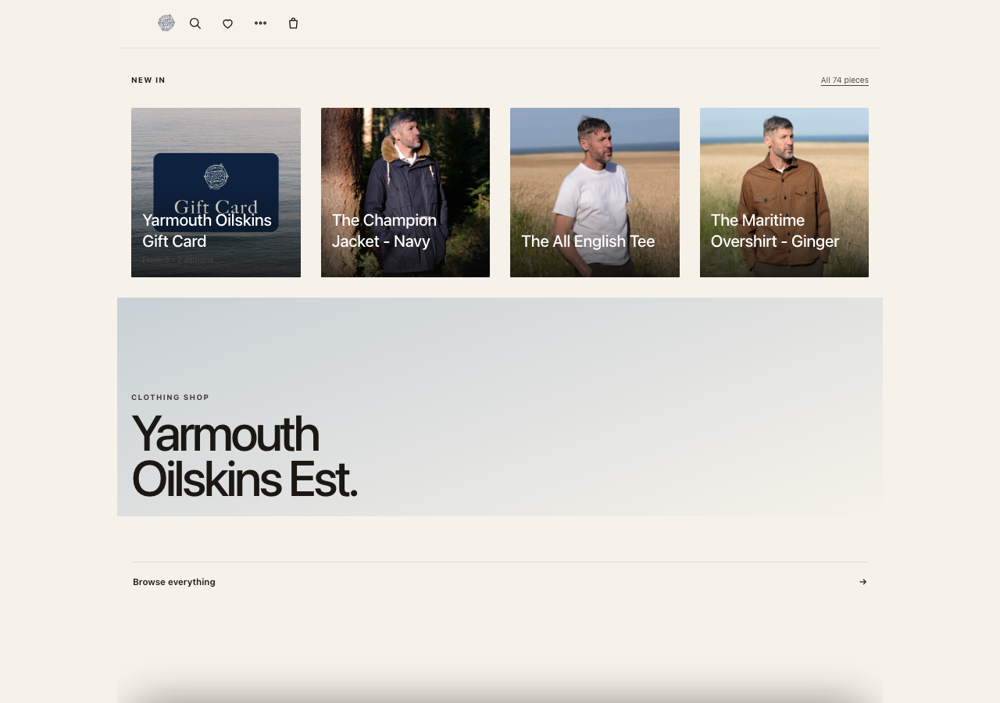
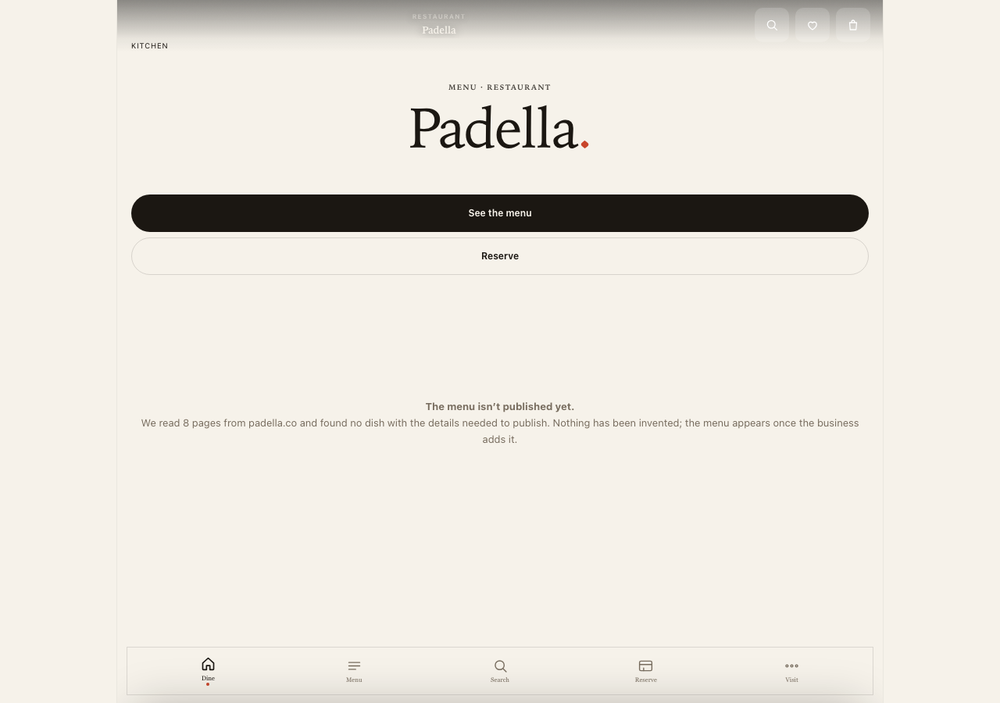
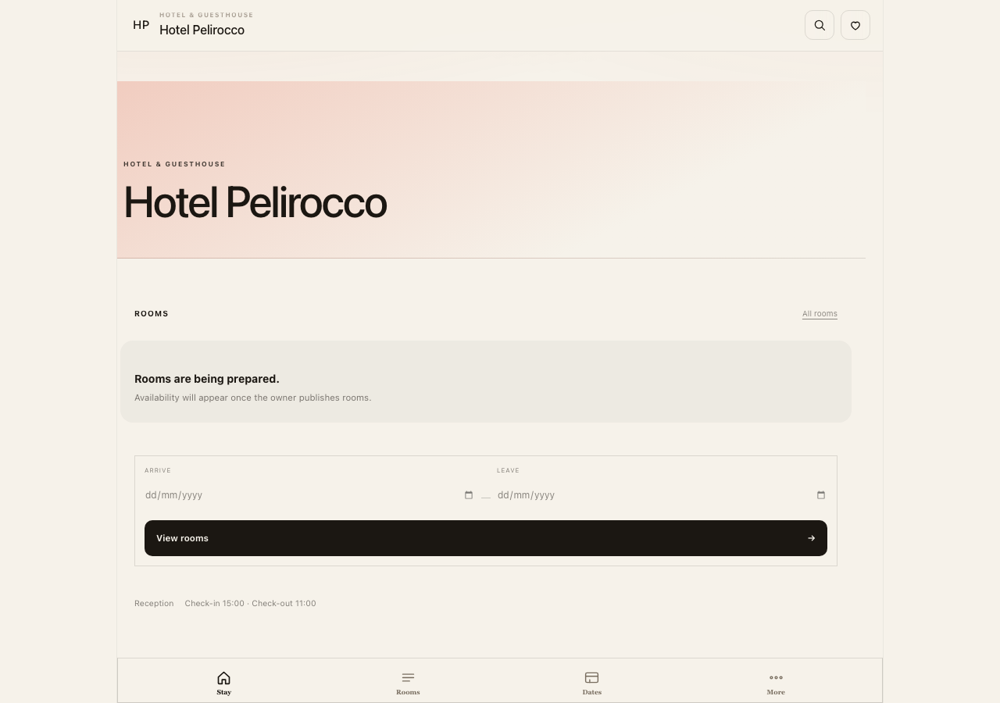
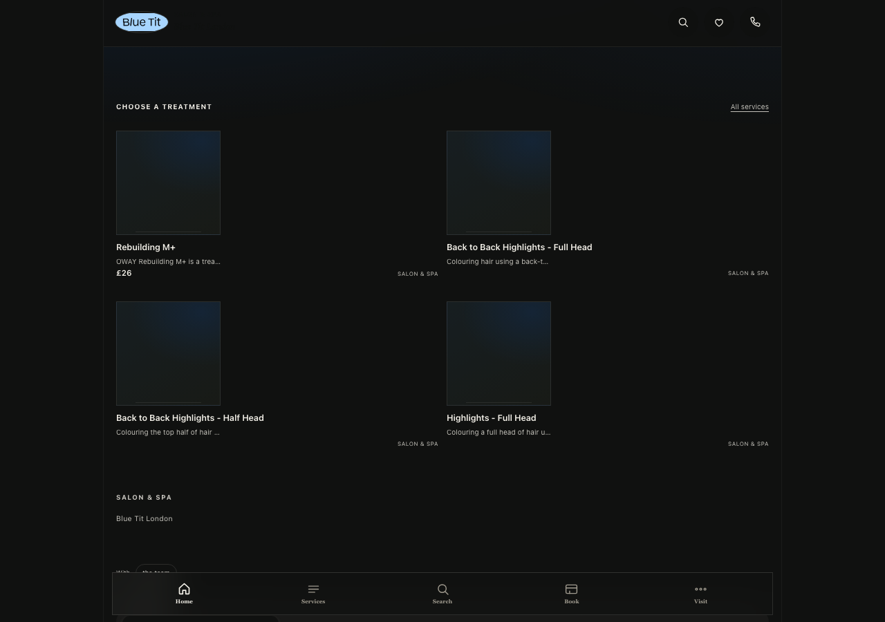
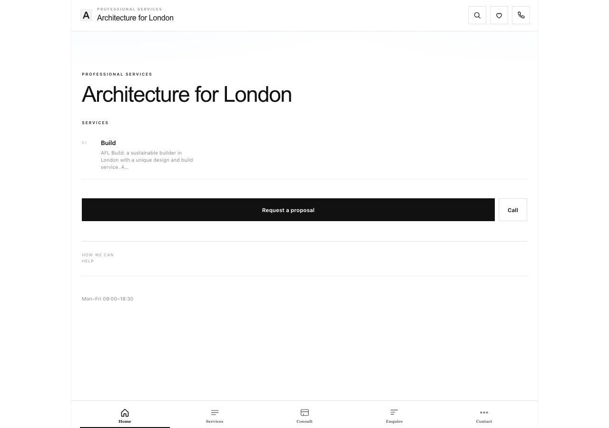

responsive-1280
5 captured screens · 390px unless labelled

yarmouthoilskins · editorial
home · 1280px
Padella · editorial
home · 1280px
Hotel Pelirocco · editorial
home · 1280px
Blue Tit London · luxe
home · 1280px
Architecture for London · classic
home · 1280px